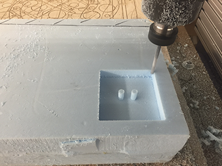
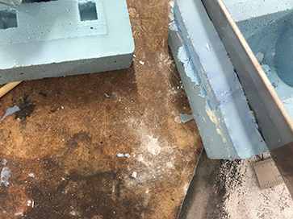
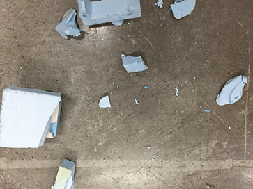
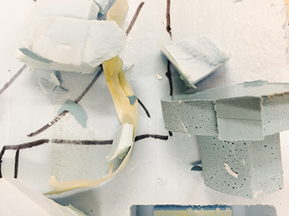
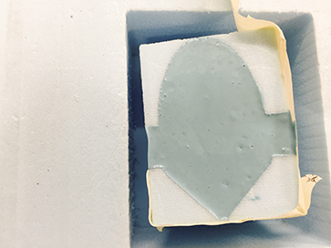
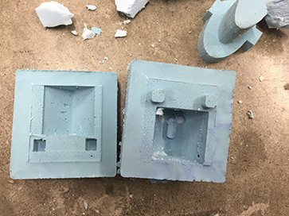
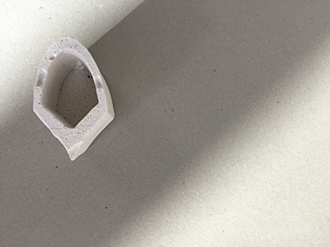
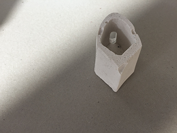
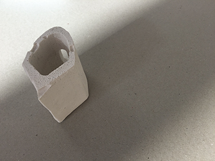

Week 7
To-do:
Design a 3D mold, machine it, and cast parts from it
Positive to Positive Mold to Negative Mold to Positive to...
Having had cast a relief sculpture previously, I thought myself an expert. The hubris was unwarranted, in fact I think it would have been wiser to espouse the Socratic paradox ("I know one thing: that I know nothing").
However for willful person, there is no going back - I set to make a light fixture - a hallow shape to house a light scocket with a crevice for the wire. Working in Rhino, I first designed the positive then with consult from the gurus I worked on making a positive three piece mold.
The process was a laborious one. Yet by Sunday morning I thought I had it down flat. It was time to mill. While my shape was relatively small it was still larger than any of the readily available end mills. So on Tuesday morning I negotiated to borrow a longer bit from the Harvard Design School.
- 
- 
- 
The trials and tribulations did not end there. Shortly after the process was done I realized I made a few error in mold, which either the original design or the milling instructions could have compensated for. I resolved the errors retroactively using tape, an exacto knife, and a sprinkling of Hydrostone.
It was then time for OOMOO, whether due to my poor mixing/pouring skills or the compromised A/B parts the substance was foamy – a texture my final piece inherited.
- 
- 
- 
All's well that ends well - after a semi-disasterous process of "free-ing" my OOMOO negative mold from its positive master and modifying the negative mold with clay and a blade, I was ready to pour.
- 
- 
- 
While with its own set of flaws, I was quite happy with the fruits of my labor.